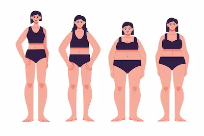

Casos reales: Personas con el mismo IMC y cuerpos distintos
El mito del IMC como medida universal
Dos personas con el mismo IMC pueden tener composiciones corporales radicalmente diferentes. Un culturista y una persona sedentaria pueden compartir un IMC de 28, pero mientras el primero tiene un cuerpo musculoso y bajo porcentaje de grasa, el segundo podría tener obesidad y poca masa muscular. Esto expone una falla crítica del IMC: no considera la calidad del peso.
Este fenómeno es común en deportistas. Por ejemplo, jugadores de rugby o levantadores de pesas a menudo son clasificados como "sobrepeso" según el IMC, a pesar de estar en excelente condición física. Por ello, en estos casos, herramientas como el porcentaje de grasa o pruebas de rendimiento son más relevantes.
Ejemplo 1: Culturista vs. Sedentario
Imagina a un culturista con un 8% de grasa corporal y un IMC de 30, y a una persona sedentaria con el mismo IMC pero 35% de grasa. El primero tiene un corazón fuerte, presión arterial normal y alta sensibilidad a la insulina, mientras que el segundo podría sufrir de hipertensión o prediabetes. Esta diferencia subraya que el IMC no refleja el estado metabólico real.
Además, el culturista quema más calorías en reposo debido a su músculo, lo que reduce su riesgo de acumular grasa a largo plazo. En contraste, la persona sedentaria con exceso de grasa enfrenta mayores complicaciones, como inflamación crónica o resistencia a la leptina (hormona de la saciedad).
Ejemplo 2: Mujer mayor vs. Joven atlética
Una mujer posmenopáusica y una joven nadadora pueden tener un IMC de 22, pero distribuciones corporales opuestas. La primera podría tener poca masa muscular y grasa abdominal (aumentando su riesgo de osteoporosis), mientras que la segunda tiene piernas y brazos tonificados, con grasa distribuida de manera saludable.
Este caso muestra que la edad y el género también influyen. Con los años, la pérdida natural de músculo y los cambios hormonales hacen que el IMC sea menos confiable en adultos mayores, quienes podrían beneficiarse más de evaluaciones de densidad ósea o fuerza muscular.
Conclusiones: Más allá del número
El IMC es un punto de partida útil, pero nunca debe usarse de forma aislada. Historias como estas demuestran que la salud depende de múltiples factores: composición corporal, actividad física, alimentación y genética. Métodos como DEXA (absorciometría dual) o incluso fotografías progresivas dan una visión más completa que un simple cálculo matemático.
Para evaluar tu salud real, combina el IMC con otras métricas (circunferencia de cintura, exámenes de sangre) y escucha a tu cuerpo. ¿Tienes energía? ¿Duermes bien? Estas señales cualitativas son igual de importantes que cualquier número.